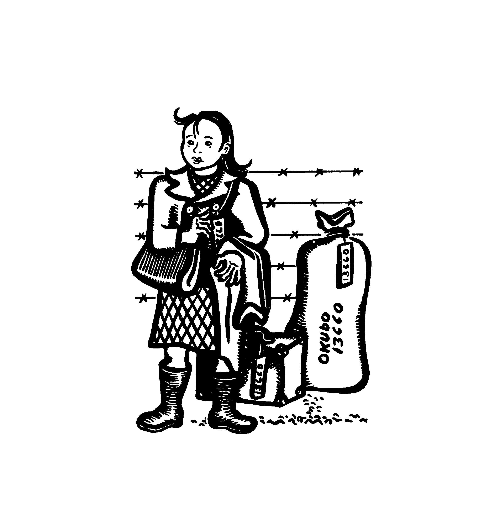
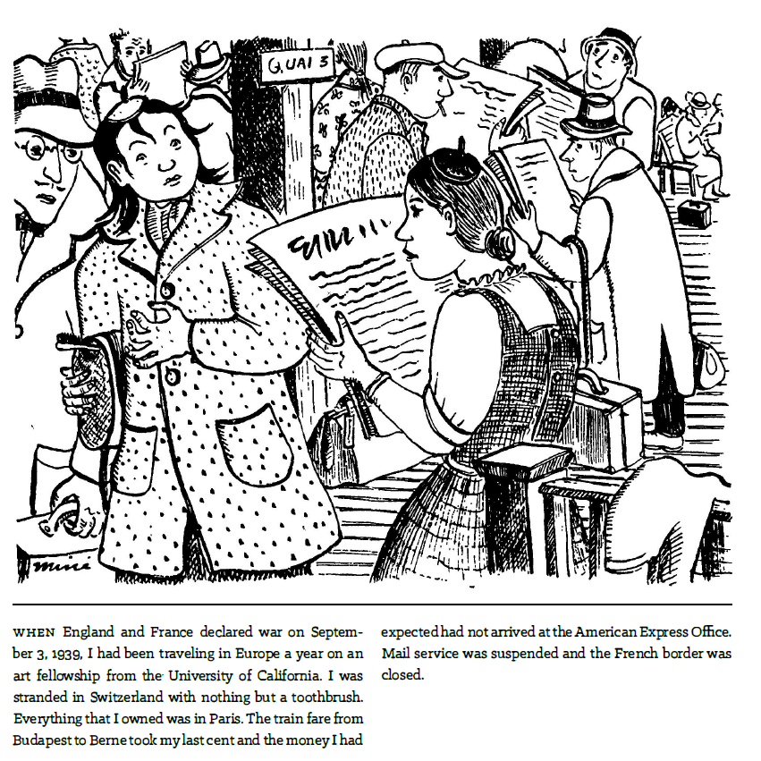
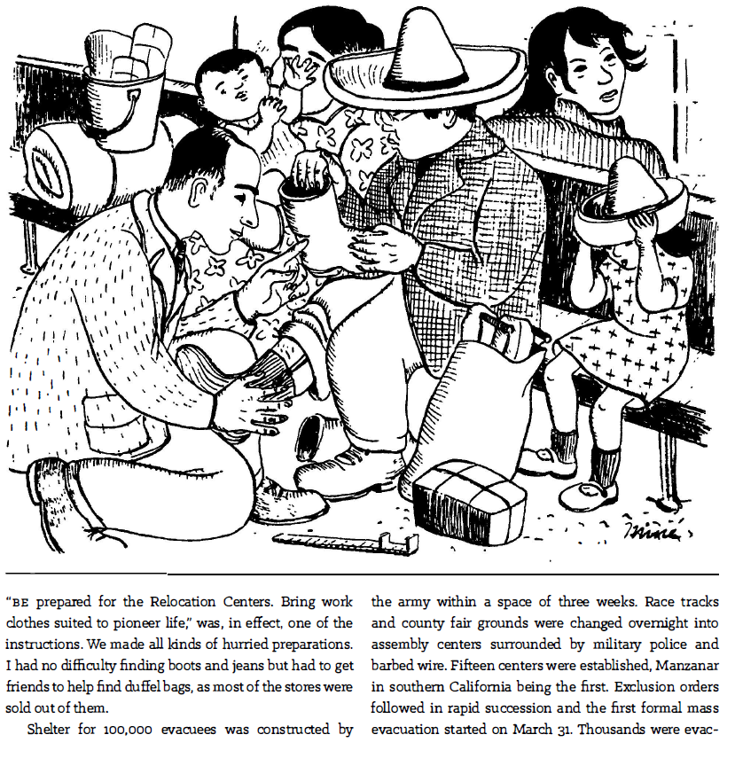
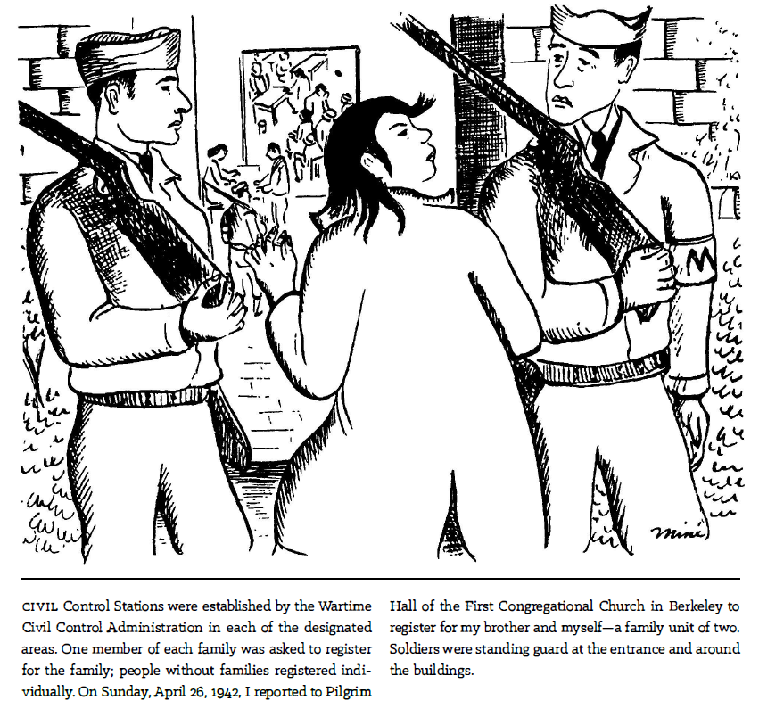
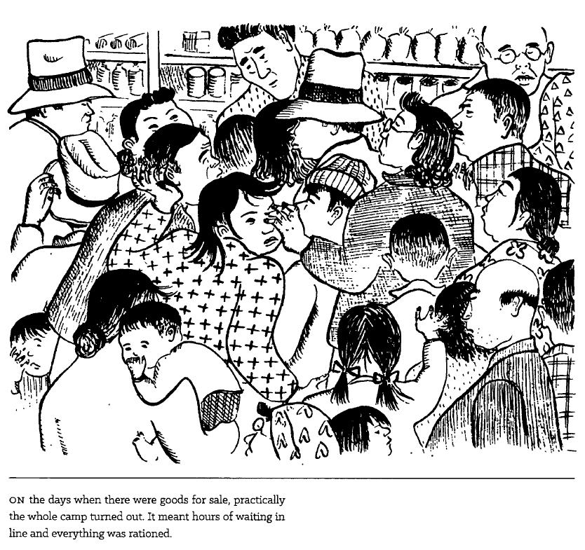

WEEK 6: MINÉ OKUBO'S CITIZEN 13660 (1946)

Estimated Completion Time: 90 minutes
Semester-at-a-Glance:
| Module | Week | Date | Topics | Reading | Assignments & Assessments | Assignment Due Dates |
| Module 3 |
Week 6 | February 10-16 | Miné Okubo's Citizen 13660 (2014) | Pages 3-99 | Quiz 1 (10%) | February 16 at 11:59 pm (EST) |
| Week 7 | February 17-23 | Miné Okubo's Citizen 13660 (2014) | Pages 100-209 | --- | --- | |
READING WEEK |
February 24 - March 2 | |||||
| Module 4 | Week 8 | March 3-9 | George Takei's They Called Us Enemy (2019) | Pages 1-108 | Personal Reading Response 2 (20%) | March 9 at 11:59 pm (EST) |
| Week 9 | March 10-16 | George Takei's They Called Us Enemy (2019) | Pages 109-205 | --- | --- | |
| Module 5 |
Week 10 | March 17-23 |
Guy Delisle's Hostage (2017) |
Pages 1-97 | Group Discussion (20%) | March 23 at 11:59 pm (EST) |
| Week 11 | March 24-30 |
Guy Delisle's Hostage (2017) |
Pages 99-193 | --- | --- | |
| Module 6 |
Week 12 | March 31 - April 6 | Marjane Satrapi's Persepolis (2004) |
Pages 3-71 | Personal Memoir and Analysis (30%)--IF YOU WANT FEEDBACK ON THE PROJECT | April 6 at 11:59 pm (EST) |
| Week 13 | April 7-13 | Marjane Satrapi's Persepolis (2004) |
Personal Memoir and Analysis (30%) | April 13 at 11:59 pm (EST) | ||
| Week 14 | April 14-20 | Course Administrative Matters | --- | Quiz 2 (10%) |
April 20 at 11:59 pm (EST) Please note that because grades must be submitted, I cannot offer extensions on this quiz. Any that are not completed by the deadline will receive a grade of 0. |
|
Introduction
Welcome to Week 6! The next text that we will be examining is Citizen 13660 (1946). However, we're going to be using a digital version of the edition that was published in 2014. As a quick textual note, when I refer to the text, I will call it Citizen for the sake of brevity and for those who use screen readers; however, I do so while being mindful of the fact that this choice omits a critical part of Okubo's identity and personal history: her camp identification number.
Finally, before you get into this week's content, I recommend reading the Introduction to our edition of the text. The foreword, written by Christine Hong, makes some great arguments about the text that I am going to break down in the sections that follow. They will make more sense if you read her essay before (or at least alongside) the content for this week.
Background: WW2 and the Imprisonment of Japanese-Americans
Right: brief history lesson time. Let's talk WW2 and America's use of incarceration camps (what some of you may know as "internment camps," though here is an article that discusses why that is a misnomer). Let's start with a TEDEd overview video (00:05:46) of what happened to the Japanese-American population:
Life was incredibly difficult for those who were forced into these camps. The following video (00:03:40) from the Smithsonian gives us an idea of the oppression that this group faced:
As you can see, this is an ugly chapter in American history. Here is a propaganda video (00:09:27) that was being shown in America during this time (though please be warned that it does contain fear-mongering and racism, including language and sentiments that are now considered to be politically incorrect):
If you noticed some unnerving parallels between the American internment of Japanese-Americans and what was happening in Nazi Germany at the beginning of the Third Reich, well, then you're seeing part of the larger issue. The propaganda video above attempts to sanitize the traumatic dislocation and forcible internment of Japanese-Americans by depicting the process ostensibly as voluntary, but if you listen to the accounts of Takei and others, it's clear that this is a narrative constructed by the American government to assuage the guilt of its citizens.
And lest we become complacent and feel that Canadians have some moral high ground here, I will add that point that Canada did the same thing to its citizens of Japanese-descent. Thus, I invite you to watch this video (00:15:17) that shows just how relevant this topic continues to be, especially for US immigrants who are being detained for crossing the boarder. Pay attention specifically to Nojima Louis's discussion of oral history and memory at 00:04:38:
Obviously, there is a lot of history and painful narratives that we could discuss on this topic, but for the sake of keeping this manageable, we're going to focus on Takei's narrative and experiences. However, if you would like to learn more about the Japanese Incarceration Camps, then the National Archives and National WWII Museum are good places to start.
Who is Miné Okubo?
Okubo was a Japanese-American who was relocated to one of these camps. She was also a writer, artists, and political activist that fought to call attention to the racial misconduct that took place during WW2.
Video Source (version with descriptive video available)
In terms of the memoir itself, the text and the drawings were done by Okubo, which means that we have a graphic memoir in the truest sense of the word: all narrative and design choices were made (or at least approved) by Okubo.

Okubo's illustration of herself from the prefatory matter of the book. She stands before a barbed-wire fence with her luggage. Both she and the luggage have tags with the number 13660 pinned to them.
Furthermore, given that this text was published in 1946, it also behooves us to remember that this text would have been a prototypical graphic memoir. At the time of it's publication, Citizen 13660 was referred to as a "graphic report" and "documentary drawing" (as cited in Okubo, 2014, xiv). This is important to recognize because the graphic memoir subgenre didn't exist yet in a formal sense. In fact, the subgenre as we know, really began to become popular in the 1980s with the publication of Art Spiegelman's Maus.
Why is this context significant? Because it helps us to remember that when Okubo published Citizen 13660, it was an experimental form of personal narrative expression in a tumultuous political landscape. As Christine Hong notes in the introduction to this text:
As Okubo would colorfully narrate to younger generations of scholars interested in researching her wartime oeuvre, Citizen 13660, in its publication by Columbia University Press in 1946, had appeared "too soon after the war," when "anything Japanese was still rat poison." (as cited in Okubo, 2014, viii)
For reference: WW2 ended in 1945. Thus, the notion that Okubo's text could appear "too soon" calls our attention to just how racially and politically divided America was in the post-war era.
But, Okubo was well ahead of her time. Her graphic memoir would push the boundaries of literature and art, giving us much to investigate within the broader context of this subgenre. As Hong observes, "indeed, much as Okubo originally captioned the line drawings in Citizen 13660 with framing text, so too would she thereafter endeavor to frame the camp experience, through paratextual and extratextual commentary, for successive generations of her readers" (as cited in Okubo, 2014, ix).
Narrative and Reader Perspectives
Okubo was both a victim of and witness to oppression and racism during WW2. The literal and metaphorical perspectives that she gained during experience made her a life-long activist.
Indeed, as Hong notes, Okubo's "side profile frames nearly every image of Citizen 13660--a strategy that anticipates the testimonial comics image of late-twentieth-century human rights graphic novels. As both historical eyewitness and transhistorical mediator of the scene before her, 'Okubo' conveys a double-sided message: an authenticating, testimonial 'I saw it' on the one hand, and an ideologically universalizing 'this could be you' on the other (as cited in Okubo, 2014, xv). Here, Hong refers to the political figure of "Okubo," who became a well-recognized political symbol in the media for her work and activism, but also came to represent the suppressed voices of Japanese Americans. Her presence served as an ever-present reminder (what Jacques Lacan would call a stain) of the trauma that Japanese Americans endured during the war, and thus shaped the post-war narrative landscape.
Reader Perspective
Furthermore, as Hong observes, we see a complicated relationship emerge between author, reader, and text in this scenario:
The first-person subject of Okubo's memoir thus not only mediated but also mitigated the realities of wartime risk. In effect holding the gaze of the outside viewer, "Okubo"--as a historical eyewitness embedded within scenes of camp life--cannily worked as a framing device that solicited the meaning of the camps through the engagement of postwar readers. Two temporalities were at odds here: the nonsequential time of incarceration that challenged any progressive or recuperative reading of the camps versus the progressive time of a nation capable of moving past its "mistakes." (as cited in Okubo, 2014, xv)
What does this mean? Watch the following video clip (00:01:13), which offers us some context for understanding how Hong is talking about Okubo:
What Hong is getting at in this passage is that there are several permutations (or versions) of Okubo that exist in tension with each other. For us, the three most important are the following:
- The first-hand, historical eyewitness who observed the atrocities in these camps
- The narrative device (the first person narrator) who affords us a view into that world as she writes about her past
- The collective, third-party version of Okubo (who Hong is calling "Okubo," with quotations) that was formed in response to audiences reading and hearing her story
And, according to Hong:
This dynamic hinged on the "super-vision" of the postwar reader, whose interpretive frame at once aligned with and superseded that of "Okubo" as a situated meaning making mechanism within Citizen 13660's scenes of camp life. Exteriorized within the field of vision, the autobiographical first-person subject, "I," whose perspective structures that of Citizen 13660's outside viewer, is spatially rendered as "Okubo"-visualized, in third-person terms, as an object of perception. As both first-person vehicle and third-person object relative to the reader, "Okubo" signals less framed narrative than framed reception. (as cited in Okubo, 2014, xvi)
In other words, "Okubo" (the version or symbol created by readers) has less to do with how Okubo structures the narrative and more to do with how we participate in viewing it (what Hong calls "framed reception"). In other words, while Okubo is the first version and created the second version, it was (and still is) the readers who created the third version, or "Okubo." To go back to a much earlier concept from this course, "Okubo" is the fictive author as the reader imagines Okubo, based upon the memoir.
Narrative Style and Form
Right away, we should be taking note that this memoir looks different physically from the others that we've examined so far in this course. Again, returning to the idea of Citizen as a prototype for what would become the graphic memoir, we find that the pages of Okubo's work are presented more like an illustrated memoir. It lacks the comic book conventions that we have (now) come to associate with this subgenre, which also makes it a fascinating text to discuss.

Page 3: Instead of panels and gutters, Okubo's text has a single image that takes up most of the page and her narrative is in small print below. The entire book is done in black and white.
4.png) |
Self-ReflectionConsider the narrative voice and stylistic choices that Okubo makes in her work. How would you characterize them? Considering the historical context, what sort of meaning can we derive from Okubo's choice to have the memoir be entirely in black and white? |
It's all in the details...
You will notice that Okubo spends a great deal of time focusing upon details in this narrative. There is a level of painstaking precision that emerges in this text that the reader is hard-pressed to ignore:

Page 15: the image depicts Japanese-Americans shopping for supplies to bring with them to the camps. A man is being fitted for a pair of boots while a child tries on a sombrero. Okubo watches on, looking over her shoulder. The text below notes that "Shelter for 100,000 evacuees was constructed by the army within a space of three weeks [...] Fifteen centers were established [...] Exclusion orders followed in rapid succession and the first formal mass evacuation started on March 31."
Dates, locations, numbers--the details here are part of Okubo's testimony. And, much like lawyers try to find holes in arguments in courts, readers would have been looking for inconsistencies in Okubo's narrative that would allow them to dismiss her account as being sensationalized or untrue. Thus, for Okubo, it was essential to get the details correct to make her narrative appear more objective.
For similar reasons, Okubo doesn't focus much on the "I" of this narrative until about page 17. Instead, while she is establishing context and the chronology for the memoir, she focuses on broader experiences and events that were happening. Then, on page 18, we see a shift: Okubo begins to talk about what she and her brother experienced first-hand:

Page 18: Okubo glares at two guards as she passes between them into a building. On this page, she writes: "On Sunday, April 26, 1942, I reported to Pilgrim Hall of the First Congregational Church in Berkeley to register for my brother an myself--a family unit of two."
The use of first-person pronouns ("I" and "we") increases dramatically at this moment in the work, signaling a narrative shift from Okubo as a historian to a first-hand witness of these events. From this point onward, we will see Okubo oscillate between sharing her personal story through the "I" and giving testimony wherein conditions and events are stated objectively as facts:

Page 85: a crow of people fight to purchase supplies at the camp store. Okubo is crushed in by the crowd. She writes: "On the days when there were goods for sale, practically the whole camp turned out. It meant hours of waiting in line and everything was rationed."
It is this rather split use of narrative perspectives--the stark contrast between the subject experience and the objective reality--that gives us versions 1 and 2 of Okubo (the historical eyewitness and the first person narrator).
There is also a contrast here between the factual, almost boring recall of Okubo's narrative and the dehumanizing, horrifying emotions evoked by the illustrations. This juxtaposition reflects the situation in the camps: days filled with the same routines, but also the emotional toll that takes place within the traumatized community.